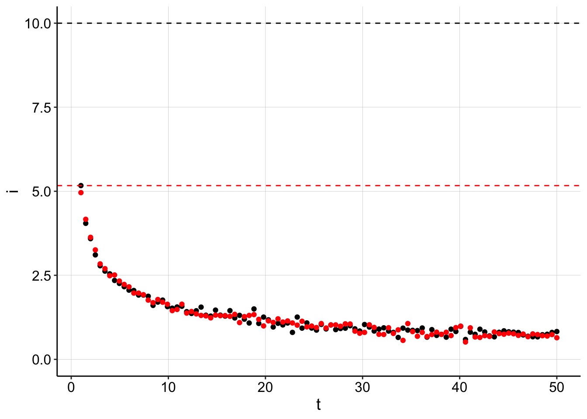
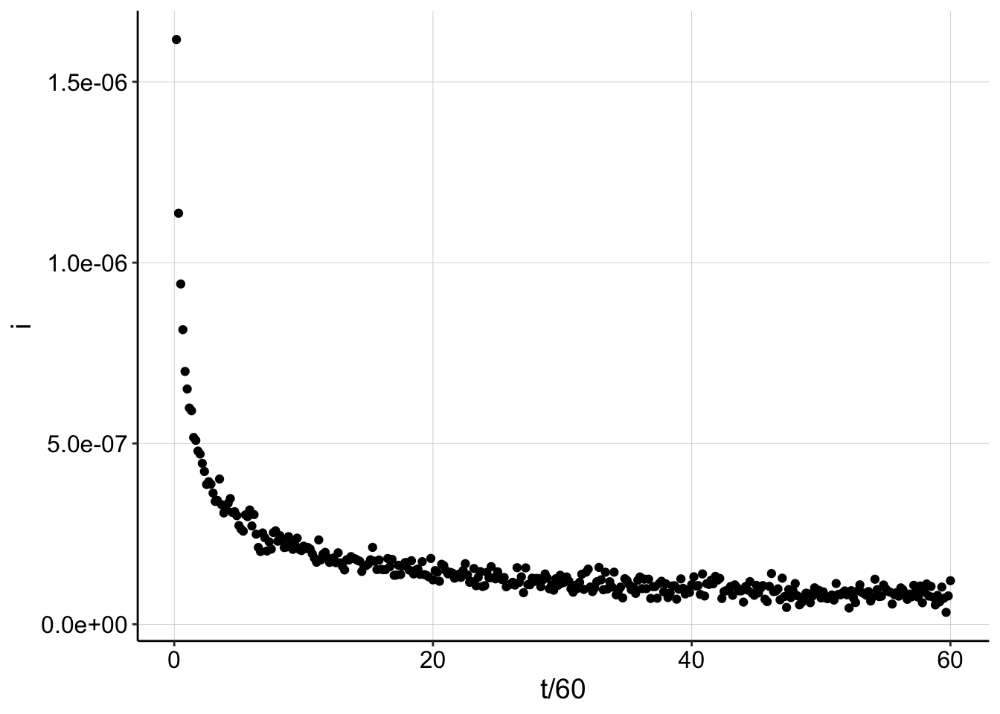
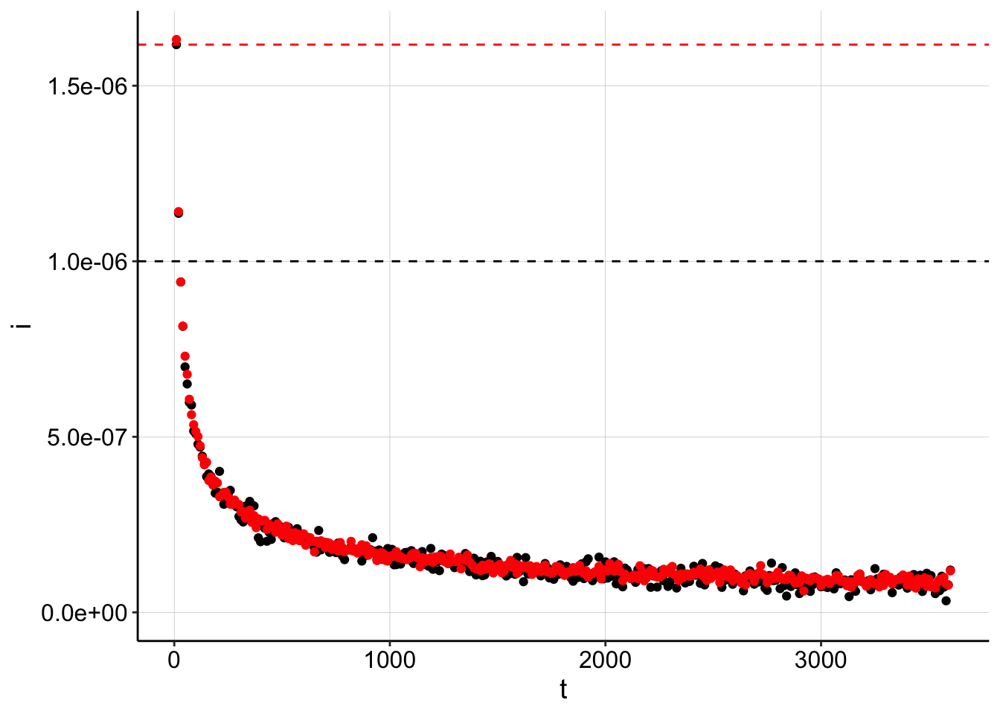
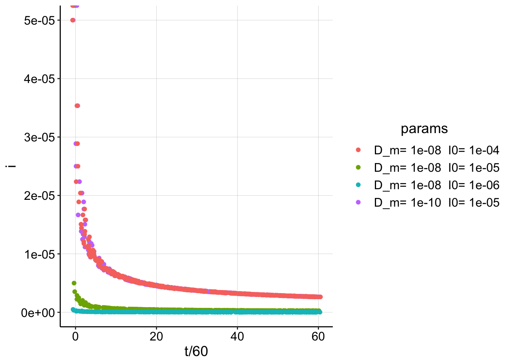

Generating and Decoding \(D_m\) from Echem data
12_17_18
Note the YAML contains specifications for a github document and html. The best way to deal with this is to knit them separately from the knit menu. Otherwise the html has blurry plots and tends to delete the md cached plots unless you tell it to cache everything!
library(tidyverse)
library(cowplot)
library(broom)
library(modelr)
library(viridis)
library(lubridate)
library(knitr)
#knitr::opts_knit$set(root.dir = '/Users/scottsaunders/git/labwork/IDA/12_10_18')
knitr::opts_chunk$set(tidy.opts=list(width.cutoff=60),tidy=TRUE, echo = TRUE, message=FALSE, warning=FALSE, fig.align="center")
theme_1 <- function () {
theme_classic() %+replace%
theme(
axis.text = element_text( size=12),
axis.title=element_text(size=14),
strip.text = element_text(size = 14),
strip.background = element_rect(color='white'),
legend.title=element_text(size=14),
legend.text=element_text(size=12),
legend.text.align=0,
panel.grid.major = element_line(color='grey',size=0.1)
)
}
theme_set(theme_1())
#source("../../tools/echem_processing_tools.R")I have been led down a path to create this notebook after seeing some very unintuitive things regarding the nonlinear fits of my SWV decays. As a reality/sanity check I want to generate some data from my known diffusion equation and use a nonlinear least squares to estimate a coefficient and calculate the original parameters. This should work. If this doesn’t work, then I don’t understand something important about this simple set of equations.
Some Basic Theory
Recall that the current from SWV scans can be assumed to fit a 1D diffusion profile of the form:
\[C(t)=\frac{2 M_0}{A \sqrt{4 \pi D_m t}}\] Using the equation for square wave voltammetry current and subsituting for \(C\) and \(M_0\), we get the following expression.
\[I_{swv}=I_0 \frac{\sqrt{D_{ap} t_s}}{\sqrt{4 D_m t}}\] With this expression we can calculate an \(I_{swv}\) for a datapoint given the time, \(t\) and the parameters \(I_0\),\(D_{ap}\), \(D_m\), and \(t_s\). We will use this to generate a test dataset.
Then if we are going to fit data from this expression, we can assume it is of the form
\[y=m t^{-\frac{1}{2}}+b\] If we fit for that coefficient, \(m\), then \(D_m\) is the following \[D_m=\frac{I_0^2 D_{ap} t_s}{4 m^2}\] We will use this equation to decode our “fit” back into a \(D_m\), which should be close to the original value we generated the data with.
Generate Some Data
First, let’s write a function to generate a dataset with known parameters.
generate_Iswv <- function(t, I0 = 1, D_ap = 1e-05, D_m = 1e-08,
t_s = 0.1, noise = T, sd = 0.1) {
t = t
Iswv <- I0 * (sqrt(D_ap * t_s)/sqrt(4 * D_m * t))
if (noise) {
Iswv <- rnorm(length(t), mean = Iswv, sd = sd)
}
Iswv
}Ok, so if we give this function timepoints, and parameters \(I_0\), \(D_{ap}\), \(D_m\) and \(t_s\), it will calculate what the measured \(I_{swv}\) current will be. We can also tell the function if we want normally distributed noise.
# Params
I0 = 10
D_ap = 1e-06
D_m = 1e-07
t_s = 0.1
t = seq(1, 50, length = 100)
gen_data <- tibble(t, i = generate_Iswv(t, I0, D_ap, D_m, t_s,
noise = T))
kable(head(gen_data))| t | i |
|---|---|
| 1.000000 | 5.168885 |
| 1.494949 | 4.045879 |
| 1.989899 | 3.589754 |
| 2.484849 | 3.107393 |
| 2.979798 | 2.784355 |
| 3.474747 | 2.623979 |
Ok, that seems to work well, let’s see what the current decay looks like. The \(I_0\) is shown as a dashed line.
ggplot(gen_data, aes(x = t, y = i)) + geom_point() + geom_hline(yintercept = I0,
linetype = 2)
Fit the Generated Data
Beautiful, now let’s write a function that can take in that generated data and attempt to back calculate the correct \(D_m\).
calc_D_m <- function(df, t = t, i = i, D_ap, t_s, i_0 = NA) {
if (is.na(i_0)) {
i_0 = max(df$i)
}
fit = nls(i ~ m * t^-0.5 + b, data = df, start = c(m = 0.1,
b = 0))
m = as.numeric(coef(fit)[1])
b = as.numeric(coef(fit)[2])
D_m = (i_0^2 * D_ap * t_s)/(4 * m^2)
c(D_m = D_m, i_0 = i_0, b = b)
}So, this function will take in our generated df. We will also provide it with a \(D_{ap}\) and \(t_s\).
(estimates <- calc_D_m(gen_data, D_ap = D_ap, t_s = t_s))## D_m i_0 b
## 2.634223e-08 5.168885e+00 3.565016e-03Ok, so the function runs…but its estimate is about an order of magnitude off…not great for data that we just generated. Recall that \(I_0\) was 10, it seems that could be an important problem if using the max point to estimate \(I_0\) doesn’t work well. You can see that by reruning the calculation function, but providing the correct \(I_0\) enables the fit to estimate \(D_m\) very accurately.
calc_D_m(gen_data, D_ap = D_ap, t_s = t_s, i_0 = I0)## D_m i_0 b
## 9.859589e-08 1.000000e+01 3.565016e-03Now, providing the correct \(I_0\) yields a very good estimate for \(D_m\), recall that we originally set it to 10^{-7} cm^2/sec.
Let’s look at a plot of the original data with data regenerated from the estimated fit parameters:
# generate dataset from estimates
calc_data <- tibble(t, i = generate_Iswv(t, I0 = estimates[2],
D_ap, D_m = estimates[1], t_s, noise = T))
# plot with I0's
ggplot(gen_data, aes(x = t, y = i)) + geom_point() + geom_hline(yintercept = I0,
linetype = 2) + geom_point(data = calc_data, color = "red") +
geom_hline(yintercept = estimates[2], color = "red", linetype = 2) +
ylim(0, NA)
Here you can see that the original dataset in black is perfectly overlaid by our back calculated data. However, because we assumed that \(I_0\) was equal to the max datapoint (red dotted line), we underestimated the true \(I_0\) (black dotted line) by about half. The fit then calculated the \(D_m\) to be much slower to make the data fit nicely…
Takeaway 1
This brings up an important question that I thought I understood, but now I’m confused: “How can we accurately estimate \(I_0\) from these SWV decays?” Up to this point I had just been using the first/max datapoint and normalizing by that. However, this notebook is showing me that this approach only gets you an order of magnitude accuracy (with these params).
Quick Repeat with Different Params
This time, let’s look at a dataset over the course of an hour, with a realistic \(I_0\) of 1uA, and \(D_m\) of 1e-9 cm^2/sec.
I0_v2 = 1e-06
D_m_v2 = 1e-09
gen_data_100 <- tibble(t = seq(10, 3600, by = 10), i = generate_Iswv(t = t,
I0 = I0_v2, D_ap, D_m = D_m_v2, t_s, noise = T, sd = 2e-08))
ggplot(gen_data_100, aes(x = t/60, y = i)) + geom_point()
Interestingly, when \(D_m\) and \(t\) are small enough, you can actually get signal larger than \(I_0\). Using the same metric of the max data point to estimate \(I_0\) now yields an overestimate.
NLS estimates:
(estimates_100 <- calc_D_m(gen_data_100, D_ap = D_ap, t_s = t_s))## D_m i_0 b
## 2.494532e-09 1.617001e-06 -4.597882e-09Estimates when provided with correct \(I_0\)
calc_D_m(gen_data_100, D_ap = D_ap, t_s = t_s, i_0 = I0_v2)## D_m i_0 b
## 9.540443e-10 1.000000e-06 -4.597882e-09Again, we see that the error in the \(I_0\) estimate throws off the \(D_m\) estimate by 2.5x. And the plot shows the same effect as before - incorrect \(I_0\) estimates will force the fit to adjust the \(D_m\).
calc_data_100 <- tibble(t = seq(10, 3600, by = 10), i = generate_Iswv(t = t,
I0 = estimates_100[2], D_ap, D_m = estimates_100[1], t_s,
noise = T, sd = 1e-08))
ggplot(gen_data_100, aes(x = t, y = i)) + geom_point() + geom_hline(yintercept = I0_v2,
linetype = 2) + geom_point(data = calc_data_100, color = "red") +
geom_hline(yintercept = estimates_100[2], color = "red",
linetype = 2) + ylim(0, NA)
Lastly, here’s a plot showing how the curve can shift drastically with \(D_m\) or \(I_0\).
t = seq(0, 3600, by = 10)
play_data_5_8 <- tibble(t, i = generate_Iswv(t = t, I0 = 1e-05,
D_ap = 1e-06, D_m = 1e-08, t_s, noise = F)) %>% mutate(Dm = 1e-08,
I_0 = 1e-05)
play_data_5_10 <- tibble(t, i = generate_Iswv(t = t, I0 = 1e-05,
D_ap = 1e-06, D_m = 1e-10, t_s, noise = F)) %>% mutate(Dm = 1e-10,
I_0 = 1e-05)
play_data_6_8 <- tibble(t, i = generate_Iswv(t = t, I0 = 1e-06,
D_ap = 1e-06, D_m = 1e-08, t_s, noise = F)) %>% mutate(Dm = 1e-08,
I_0 = 1e-06)
play_data_4_8 <- tibble(t, i = generate_Iswv(t = t, I0 = 1e-04,
D_ap = 1e-06, D_m = 1e-08, t_s, noise = F)) %>% mutate(Dm = 1e-08,
I_0 = 1e-04)
play_data <- bind_rows(play_data_5_8, play_data_5_10, play_data_6_8,
play_data_4_8) %>% mutate(params = paste("D_m=", Dm, " I0=",
I_0))
# calc_data <- tibble(t,i=generate_Iswv(t, I0=I0, D_ap ,
# D_m=estimates[1], t_s, noise=T))
ggplot(play_data, aes(x = t/60, y = i, color = params)) + geom_jitter(width = 1) You can actually see that wildly different combinations of \(D_m\) and \(I_0\) give identical decay curves…therefore estimating \(I_0\) is important.
Final Takeaways
What I take away from this notebook, is when we underestimate \(I_0\), the fit simply underestimates \(D_m\) to compensate. Because \(I_0\) and \(D_m\) are both in the slope term, they can be adjusted against each other to get pretty much any value. Therefore we cannot simply fit for \(I_0\), it will be unidentifiable from \(D_m\). Recall:
\[I_{swv}=I_0 \frac{\sqrt{D_{ap} t_s}}{\sqrt{4 D_m t}}\]
In this notebook, maybe the errors seemed tolerable, within an order of magnitude. However, imagine what happens when our sampling rate is much lower, as in our experiments. I would predict that with the current experimental design and analysis workflow, we are seriously underestimating \(I_0\). I do not know how much error we have, but I think it is safe to assume that it is larger than the artificial system that we have worked with in this notebook. Therefore, we need a reasonable way to estimate \(I_0\) or clarify that we are estimating it well, by using the first datapoint.
How to estimate \(I_0\)?
- Take first data point - underestimates significantly
- Transform data point by some metric - what metric?
- take SWV signal from soak before transfer - we usually wash before transfer, so I think this would overestimate. Maybe if we don’t wash, but then we will almost surely have multiple diffusion processes happening.
- Take last datapoint/asymptote - this should just be a measure of how much PYO the biofilm holds onto and how much accumulates in the media. I don’t see why this value would be connected to how much PYO was initially there.